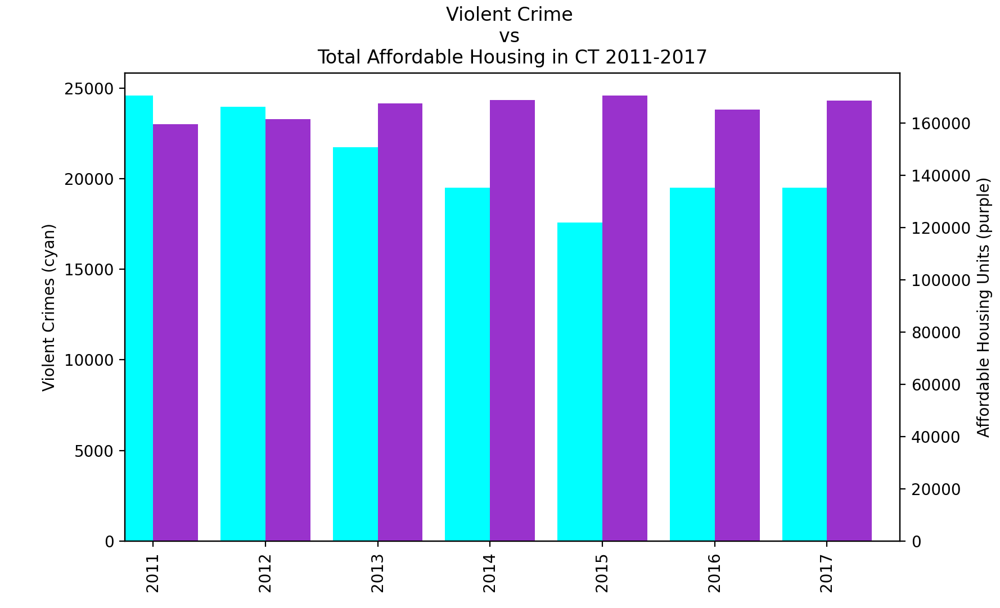
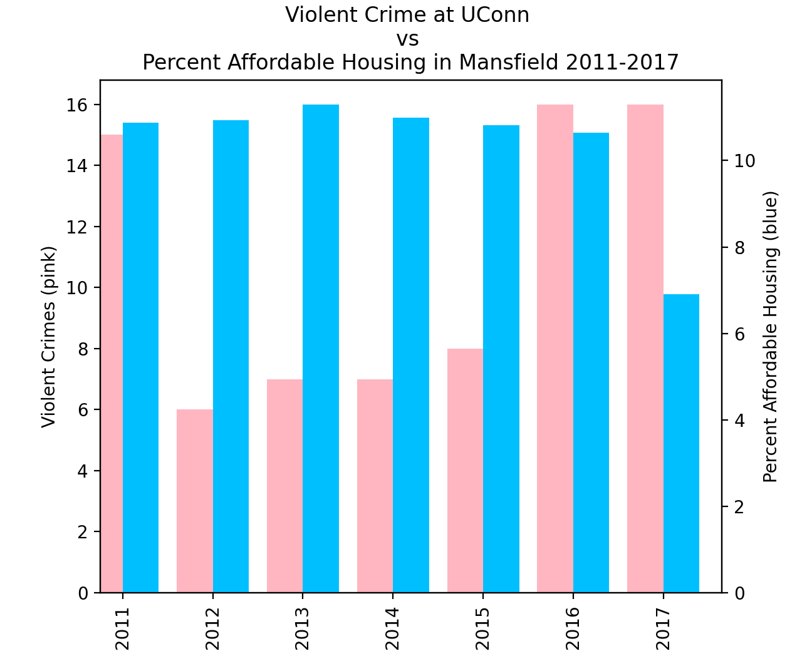
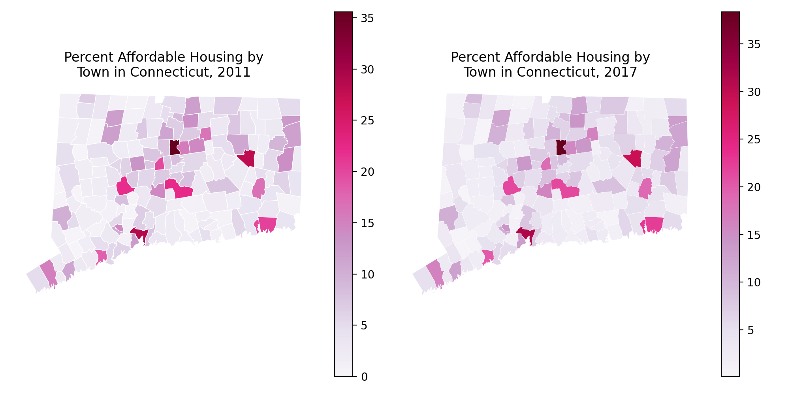
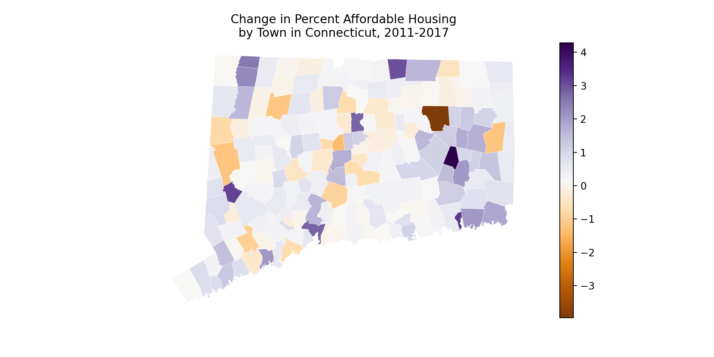
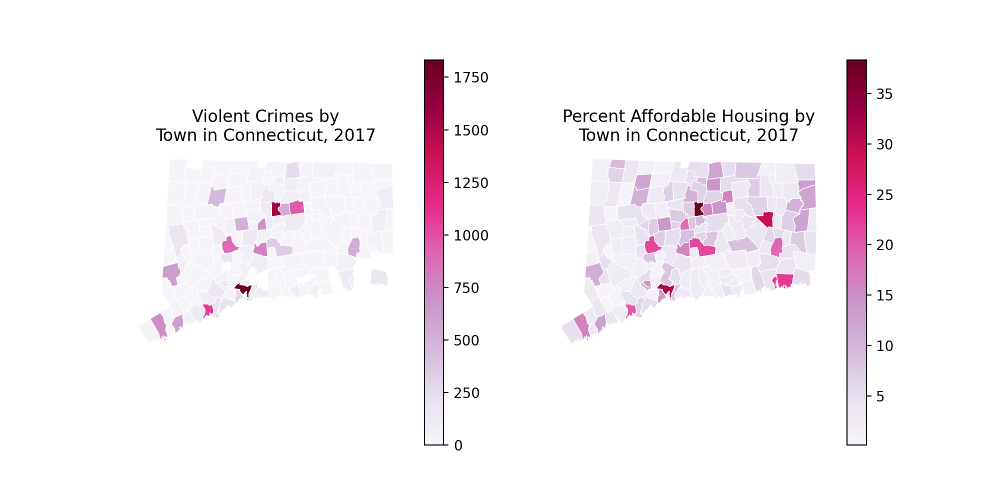
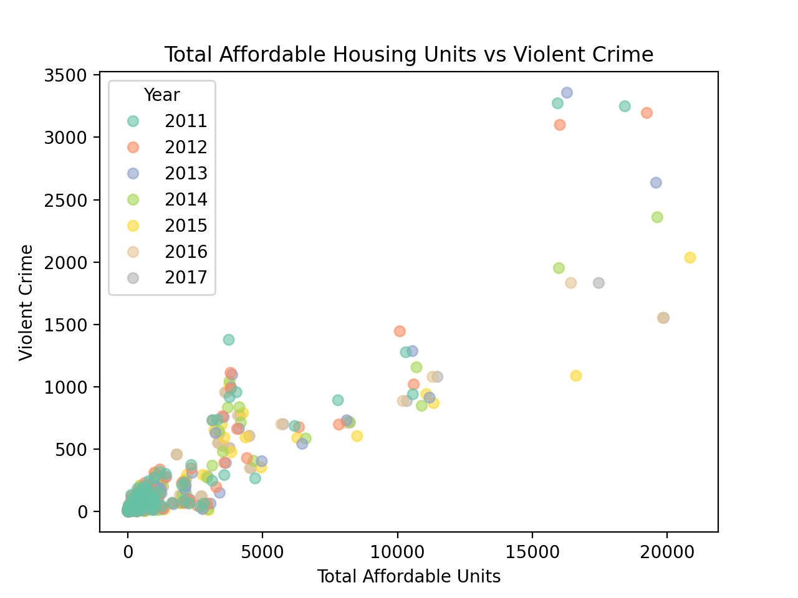
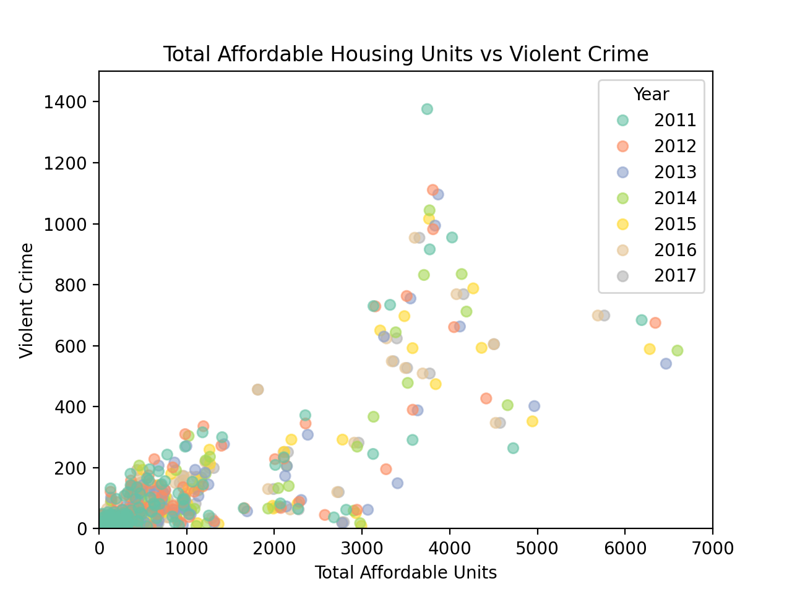
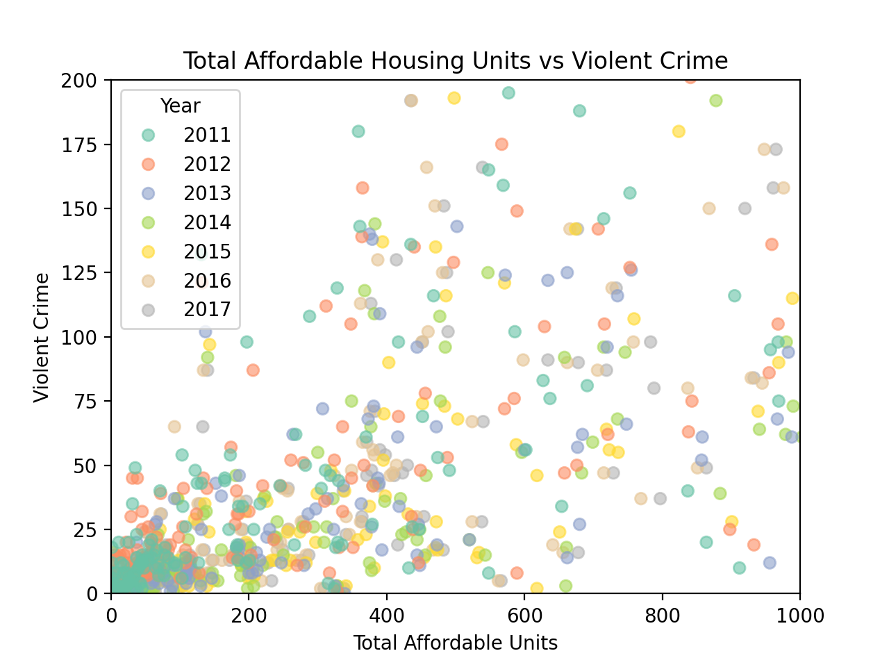

%matplotlib inline
import pandas as pd
from geopy.geocoders import Nominatim
from uszipcode import SearchEngine
import matplotlib.pyplot as plt
import geopandas as gpd
from scipy import stats
import numpy as npSTAT 3255 Final – Affordable Housing vs Crime in Connecticut Colin Sullivan
Introduction
Affordable housing has become a hot topic discussion across CT
Privatized housing continues to price out even the middle class
Government officials have turned to exploring affordable housing
Often these discussions lead to negative public reaction
Bad faith arguments about effect on town safety
Some nationwide research but very little at CT state level
Specific Research Aims
- I set out with several goals in mind
- Clean and merge data effectively
- Create interesting and informative graphics and charts about the issue
- Perform hypothesis tests and linear regression on the data to draw conclusions and forecast future information
- Hypothesis:
- The idea that affordable housing leads to violent crime is baseless and unfounded and it can be statistically proven that an increase in housing does not correlate strongly with an increase in violent crime in Connecticut towns
The Data
All data was found on the CT Data website - The primary dataset was “Affordable Housing by Town, 2011-2022” - 2000+ rows, one for each town for each year - Columns such as ‘Census Units’ and ‘Total Assisted Units’ - Formatted fairly intuitively
- Separate datasets for crime for each year, titled “Uniform Crime Reporting System Arrests in (year)”
- One row for each crime for each demographic (gender, age range, ethnicity)
- Columns are CT towns, and number of crimes in each town under category and demographic makes up the row entries
- Only had 2011-2017 available
- Very ugly and useless formatting
Exploratory Data and Cleaning
Initial looks at the data:
df = pd.read_csv('Affordable_Housing_by_Town_2011-2022.csv')
df.columns = df.columns.str.replace(' ', '_')
print(df.head()) Year Town_Code Town 2010_Census_Units Government_Assisted \
0 2020 1 Andover 1317 18.0
1 2020 2 Ansonia 8148 349.0
2 2020 3 Ashford 1903 32.0
3 2020 4 Avon 7389 244.0
4 2020 5 Barkhamsted 1589 0.0
Tenant_Rental_Assistance _Single_Family_CHFA/_USDA_Mortgages \
0 1 32
1 764 147
2 0 36
3 16 44
4 6 23
Deed_Restricted_Units Total_Assisted_Units Percent_Affordable
0 0 51 3.87
1 0 1260 15.46
2 0 68 3.57
3 0 304 4.11
4 0 29 1.83 - Not bad formatting
- Some missing data to be cleaned
df = pd.read_csv('Uniform_Crime_Reporting_System_Arrests_2016.csv')
df.columns = df.columns.str.replace(' ', '_')
print(df.head()) stat_key stat_index Connecticut Andover Ansonia Ashford Avon \
0 Murder <10 1 0 0 0 0 0
1 Murder 10-12 2 0 0 0 0 0
2 Murder 13-14 3 0 0 0 0 0
3 Murder 15 4 0 0 0 0 0
4 Murder 16 5 3 0 0 0 0
Barkhamsted Beacon_Falls Berlin ... New_Haven_1 New_London_1 \
0 0 0 0 ... 0 0
1 0 0 0 ... 0 0
2 0 0 0 ... 0 0
3 0 0 0 ... 0 0
4 0 0 0 ... 2 0
Tolland_1 Windham_1 New_York Urban NonUrban CSP_Total NIBRS Summary
0 0 0 0 0 0 0 0 0
1 0 0 0 0 0 0 0 0
2 0 0 0 0 0 0 0 0
3 0 0 0 0 0 0 0 0
4 0 0 0 3 0 0 2 1
[5 rows x 206 columns]- Horrible formatting
- Extensive cleaning and shaping of data needed
Using a separate python script to clean and warp data, left with result:
df_2016 = pd.read_csv('2016_crime.csv')
print(df_2016.head()) town AgAsslt AllOthr Arson Burgl Curfew DUI Disord \
0 stat_index 1266.0 7153.0 2388.0 1547.0 7434.0 6032.0 6593.0
1 Connecticut 2513.0 28377.0 75.0 2035.0 3.0 8333.0 10589.0
2 Andover 0.0 3.0 0.0 0.0 0.0 7.0 4.0
3 Ansonia 7.0 336.0 0.0 13.0 0.0 24.0 103.0
4 Ashford 1.0 2.0 0.0 1.0 0.0 6.0 6.0
DrugTot Embezzl ... Robbery Runaway SexOff SmAsslt StlProp Vagrncy \
0 5191.0 3509.0 ... 986.0 7714.0 4911.0 2668.0 3789.0 6873.0
1 9267.0 147.0 ... 1091.0 6.0 400.0 18839.0 696.0 24.0
2 2.0 0.0 ... 0.0 0.0 0.0 6.0 0.0 0.0
3 41.0 1.0 ... 4.0 0.0 1.0 166.0 0.0 0.0
4 8.0 0.0 ... 0.0 0.0 1.0 7.0 0.0 0.0
Vandal Weapons violent_crime non_violent_crime
0 4070.0 4350.0 8855.0 108760.0
1 2219.0 1266.0 19498.0 99214.0
2 1.0 0.0 6.0 27.0
3 8.0 18.0 168.0 808.0
4 2.0 1.0 8.0 42.0
[5 rows x 31 columns]print(df_2016.columns)Index(['town', 'AgAsslt', 'AllOthr', 'Arson', 'Burgl', 'Curfew', 'DUI',
'Disord', 'DrugTot', 'Embezzl', 'Family', 'Forgery', 'Fraud', 'Gamble',
'Larceny', 'Liquor', 'MVTheft', 'Murder', 'NgMansl', 'Prostit', 'Rape',
'Robbery', 'Runaway', 'SexOff', 'SmAsslt', 'StlProp', 'Vagrncy',
'Vandal', 'Weapons', 'violent_crime', 'non_violent_crime'],
dtype='object')Exploratory charts: 
Does not seem to be a clear correlation or obvious trend
Crimes decreasing slightly, housing increasing slightly
Further analysis needed
Just for fun, looking at UConn in the same time frame: 
Chart showing heatmaps of affordable housing through Connecticut over the specified time period: 
Hard to make any conclusions from this map
Housing seems to be concentrated in most populous areas (New Haven, Bridgeport, Hartford)
Different type of chart needed to see housing over the time period
Chart showing similar heatmap but for the change over the time period: 
Still no crazy conclusions but nice visualization
Big 3 cities all increased (slightly) over the time period
Finally, a chart showing the distribution of violent crimes vs affordable housing by town in Connecticut in 2017 
Once again concentrated in specific areas
Affordable housing more available statewide while crime is more concentrated
Hypothesis Tests and Regression
The graphs showed nicely the distribution of the statistics across Connecticut, but were unhelpful in addressing the central issue, so we turn to statistical tests
First, ANOVA test for checking change in average mean number of violent crimes:
print(stats.f_oneway(towns_2011.non_violent_crime, towns_2012.non_violent_crime, towns_2013.non_violent_crime, towns_2014.non_violent_crime, towns_2015.non_violent_crime, towns_2016.non_violent_crime, towns_2017.non_violent_crime))
F_onewayResult(statistic=0.2642773310334263, pvalue=0.9534882296481946)Similarly, for non-violent crimes:
print(stats.f_oneway(towns_2011.violent_crime, towns_2012.violent_crime, towns_2013.violent_crime, towns_2014.violent_crime, towns_2015.violent_crime, towns_2016.violent_crime, towns_2017.violent_crime))
F_onewayResult(statistic=0.33610584222481027, pvalue=0.918006736822041)A high p value for both of these tests tells us that we cannot say with any reasonable confidence that the averages differ over this 7 year time period for violent or non-violent crime.
Checking ANOVA test for differences in means in the total affordable housing averages across the time period:
print(stats.f_oneway(units_2011, units_2012, units_2013, units_2014, units_2015, units_2016, units_2017))
F_onewayResult(statistic=0.024439425755962096, pvalue=0.9999375190323628)Similarly, high p value does not allow us to reject the null hypothesis with any reasonable confidence.
To support this idea, I performed the three types of independent t-tests for 2011 and 2017 to see if any differences could be identified.
print(stats.ttest_ind(units_2011, units_2017, alternative='greater'))
Ttest_indResult(statistic=-0.20031736649273338, pvalue=0.5793232145405599)
print(stats.ttest_ind(units_2011, units_2017, alternative='less'))
Ttest_indResult(statistic=-0.20031736649273338, pvalue=0.4206767854594401)
print(stats.ttest_ind(units_2011, units_2017, alternative='two-sided'))
Ttest_indResult(statistic=-0.20031736649273338, pvalue=0.8413535709188802)Of all three tests, the one closest to being able to reject the null hypothesis is the one with the 2011 units less than the 2017 units. However, even in that one we cannot say with greater than ~60% confidence that they differ.
Since I have the data, just a quick test over the full 12 year period:
print(stats.ttest_ind(units_2011, units_2022, alternative='less'))
Ttest_indResult(statistic=-0.3077462095567748, pvalue=0.37923306446599264)Once again, similar result. More reasonable p-value than in the other tests, but still too high to statistically prove a difference.
Finally, a t-test on violent crime over the time period available:
print(stats.ttest_ind(towns_2011.violent_crime, towns_2017.violent_crime, alternative='greater'))
Ttest_indResult(statistic=0.8109757074058597, pvalue=0.2089734682354797)Lowest p-value yet, but still cannot say with >80% confidence that there is a difference in means in violent crime over the period.
Moving on to regression, I started with a scatterplot of affordable housing units vs violent crime activity in each town over all the years: 
Pretty linear looking distribution
Some outliers more present to extreme of data
In general, appears to have about a 1:10 ratio
To get a better picture of the concentrated data, a scaled scatter plot: 
Similar scatter breakdown
Very concentrated at minimal/no affordable housing and minimal/no violent crime
One more further scaled image: 
Much less linear distribution of data points
Still very concentrated in bottom left
Performed linear regression 3 different ways to test for correlation between the variables:
slope, intercept, r_value, p_value, std_err = stats.linregress(merged.Total_Assisted_Units, merged.violent_crime)
print("Slope:", slope)
print("Intercept:", intercept)
print("R value:", r_value)
print("P value:", p_value)
print("Standard error:", std_err)
Slope: 0.1200131200880018
Intercept: 3.398117855835963
R value: 0.9111440804120232
P value: 0.0
Standard error: 0.0015888984389570934Wanted to check the results, as the scipy.stats linregress is not the most precise:
x = df[['Total_Assisted_Units']].to_numpy()
y = df.violent_crime.values
model = LinearRegression().fit(x, y)
r_sq = model.score(x, y)
print(f"coefficient of determination: {r_sq}")
print(f"intercept: {model.intercept_}")
print(f"slope: {model.coef_}")
x_new = np.array([10, 100, 1000, 10000]).reshape((-1, 1))
y_pred = model.predict(x_new)
print(f"predicted response:\n{y_pred}")
coefficient of determination: 0.8301835352698719
intercept: 3.398117855835821
slope: [0.12001312]
predicted response:
[ 4.59824906 15.39942986 123.41123794 1203.52931874]Finally, using statsmodels.api:
import statsmodels.api as sma
xmat = sma.add_constant(x)
mymod = sma.OLS(y, xmat)
myfit = mymod.fit()
print(myfit.summary())
OLS Regression Results
==============================================================================
Dep. Variable: y R-squared: 0.830
Model: OLS Adj. R-squared: 0.830
Method: Least Squares F-statistic: 5705.
Date: Fri, 14 Apr 2023 Prob (F-statistic): 0.00
Time: 00:25:04 Log-Likelihood: -7387.3
No. Observations: 1169 AIC: 1.478e+04
Df Residuals: 1167 BIC: 1.479e+04
Df Model: 1
Covariance Type: nonrobust
==============================================================================
coef std err t P>|t| [0.025 0.975]
------------------------------------------------------------------------------
const 3.3981 4.224 0.805 0.421 -4.889 11.685
x1 0.1200 0.002 75.532 0.000 0.117 0.123
==============================================================================
Omnibus: 899.753 Durbin-Watson: 1.994
Prob(Omnibus): 0.000 Jarque-Bera (JB): 65118.125
Skew: 2.930 Prob(JB): 0.00
Kurtosis: 39.091 Cond. No. 2.86e+03
==============================================================================
Notes:
[1] Standard Errors assume that the covariance matrix of the errors is correctly specified.
[2] The condition number is large, 2.86e+03. This might indicate that there are
strong multicollinearity or other numerical problems.Intepretation of Results
Dependent variable is violent crimes
Created using OLS with the least squares method
1169 observations
Model is 1, as this is the number of predicting variables
Covariance is nonrobust as it is not calculated in a way that minimizes/eliminates variables
R-squared was consistently 0.83 or higher, which means that at least 83% of the increase in violent crime can be explained by an increase in affordable housing in this model
The intercept is 3.398, while the slope of the regression line is 0.12
There is some uncertainty in what the intercept is, but high certainty of the slope
A high omnibus shows a lack of normalcy in the data
A high skew shows a lack of symmetry
A Durbin-Watson score between 1 and 2 signifies homoscedasticity, which implies a fairly even distribution of errors in the data
A high condition number implies multicollinearity
Discussion and Summary
Unfortunately, unable to prove my hypothesis with the current data
ANOVA and independent t-tests were not able to show a statistically significant different of means with a high level of confidence over the years in either variable
Charts showed a general downward trend in violent crime and a general upward trend in affordable housing
Regression and scatter plot showed a fairly strong positive linear correlation between an increase in housing and an increase in violent crime
However, trends were identified despite not being significant enough for the tests:
Average violent crime per town:
2011: 139.91228070175438
2012: 136.52631578947367
2013: 124.39766081871345
2014: 112.0
2015: 102.88304093567251
2016: 110.35672514619883
2017: 110.35672514619883Average affordable housing per town:
2011: 943.905325443787
2012: 954.905325443787
2013: 991.1479289940828
2014: 997.9585798816568
2015: 1033.6969696969697
2016: 976.3195266272189
2017: 997.491124260355So there ARE trends in the desired direction to support the hypothesis.
Ultimately, this feels like a chicken and the egg situation and it is difficult to take the found results as quite as meaningful as the opposite, desired ones.
Affordable housing tends to be built in more populated places with more violent crime
Violent crime tends to happen more in more populated places with affordable housing
Thus, it is difficult to take this correlation as supporting or refuting any particular claim, unfortunately.